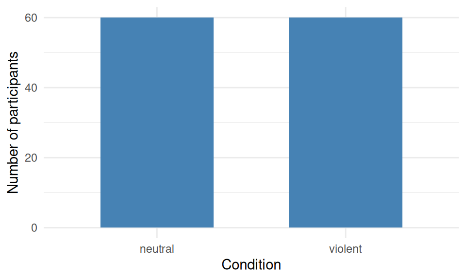
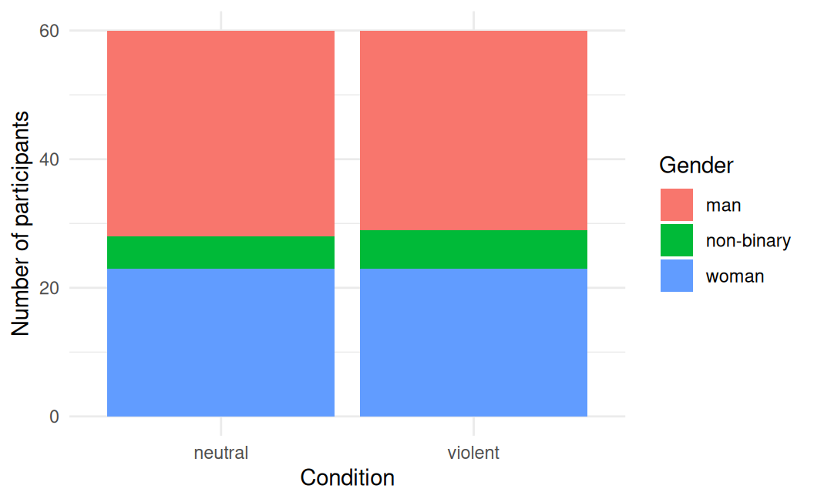
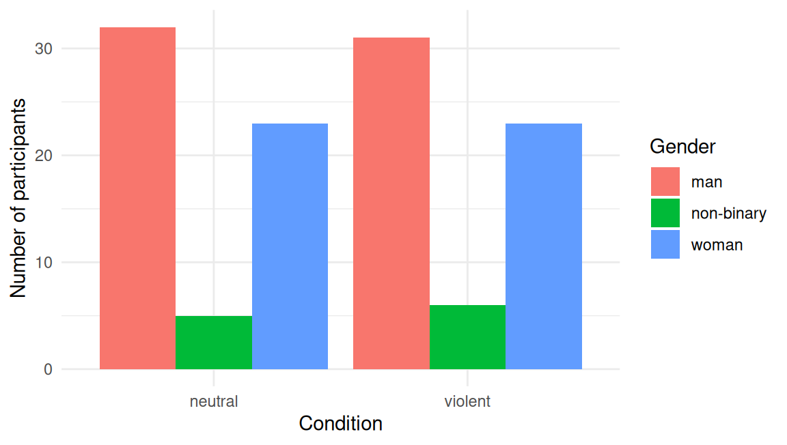
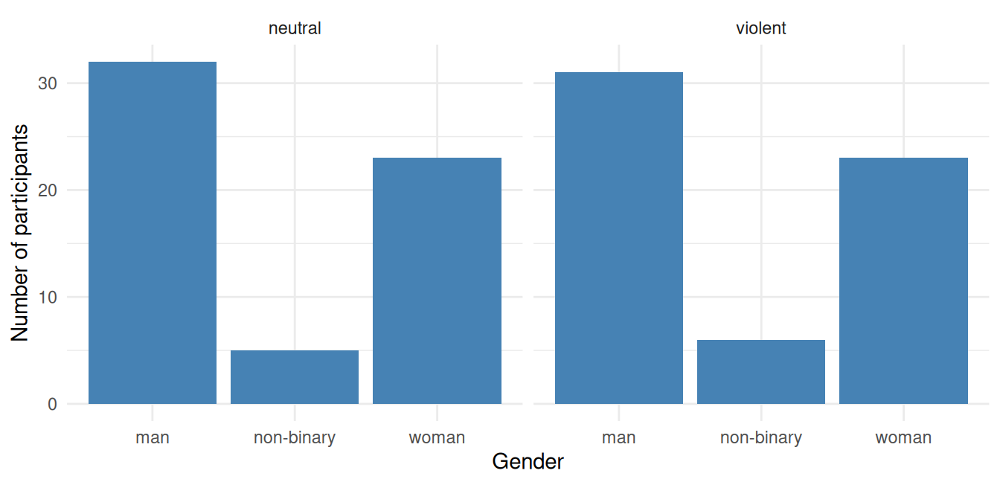
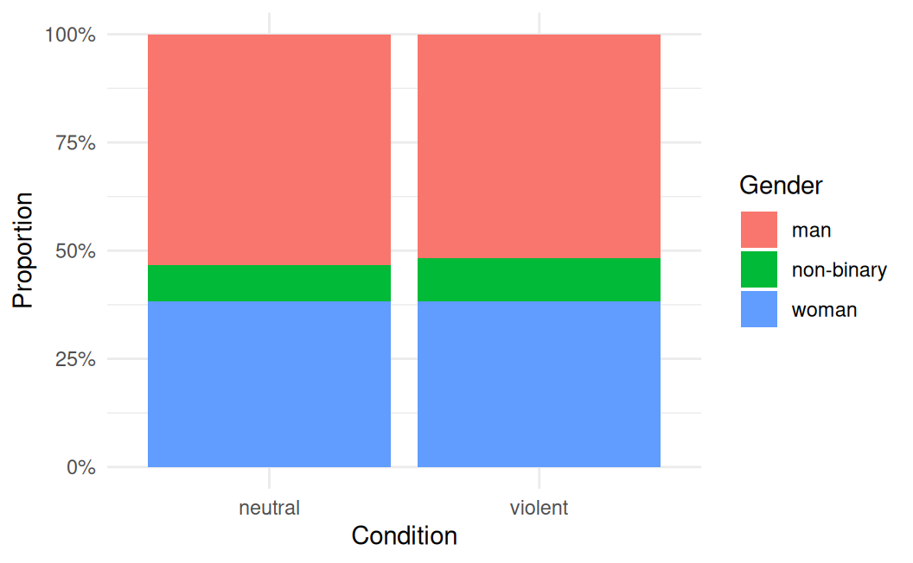
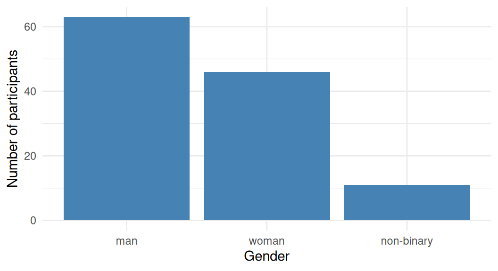
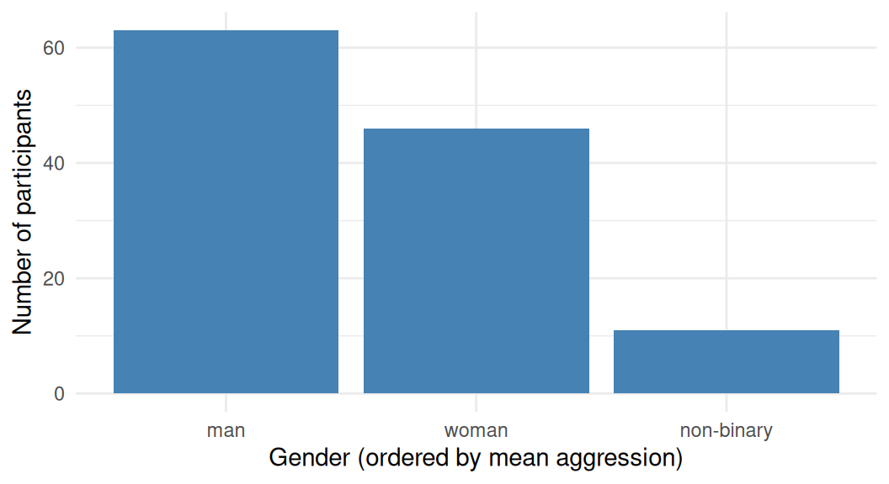
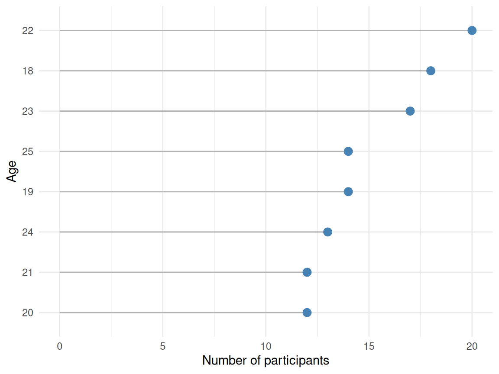

vgames <- read.csv("data/vgames_study.csv")32 Visualizing count variables
Chapter 31 argued that bar charts of means are usually a bad choice. This chapter is about the other use of bar charts: counts. Count variables are categorical or discrete: gender, condition, response choice, year, age band. A count visualization answers the question “how many?” for each category. For this question, the bar chart is not just acceptable but appropriate; it is exactly what the visual element was designed for. The chapter covers how to build clean count plots, how to handle two categorical variables together, when to switch from raw counts to proportions, how to order and customize, and a useful alternative for when a long list of categories starts to crowd a bar chart.
We use the vgames_study data throughout. Load it.
32.1 The bar chart, used well
The simplest count visualization is a single bar chart showing how many participants fall in each level of one categorical variable. Here is the count of participants in each experimental condition:
ggplot(vgames, aes(x = condition)) +
geom_bar(fill = "steelblue", width = 0.6) +
labs(x = "Condition", y = "Number of participants") +
theme_minimal()
That is the basic pattern: one aesthetic (x) mapped to the categorical variable, and geom_bar() computes the count automatically. The bar height equals the number of rows in each category. There is no y aesthetic to specify because the y value is being computed for you. Bar charts of counts are honest in a way that bar charts of means are not, because the height of the bar corresponds to a real countable quantity (number of participants), not to a derived summary that throws away the distribution.
If you already have a summary table with the counts pre-computed, use geom_col() instead. geom_col() plots the value you supply as the y, rather than computing the count internally:
cond_counts <- vgames |>
count(condition)
ggplot(cond_counts, aes(x = condition, y = n)) +
geom_col(fill = "steelblue", width = 0.6) +
labs(x = "Condition", y = "Number of participants") +
theme_minimal()
geom_bar() and geom_col() produce visually identical output. The choice depends on whether your data are the raw observations (use geom_bar()) or a pre-computed summary table (use geom_col()).
32.2 Two categorical variables at once
A common need is to show counts for the combinations of two categorical variables. For example, how many participants of each gender are in each experimental condition. There are three standard ways to display this: stacked, dodged (side-by-side), and faceted. Each emphasizes a different comparison.
Stacked bars. All counts within a condition are stacked on top of one another. The total bar height equals the total number of participants in the condition; the colored segments show how that total breaks down by gender.
ggplot(vgames, aes(x = condition, fill = gender)) +
geom_bar() +
labs(x = "Condition", y = "Number of participants",
fill = "Gender") +
theme_minimal()
Stacked bars emphasize the totals (the full bar heights) and the relative composition within each total. They are useful when the total is the primary quantity of interest and the breakdown is secondary.
Dodged (side-by-side) bars. Each gender gets its own bar within each condition, placed side by side.
ggplot(vgames, aes(x = condition, fill = gender)) +
geom_bar(position = position_dodge(preserve = "single")) +
labs(x = "Condition", y = "Number of participants",
fill = "Gender") +
theme_minimal()
Dodged bars emphasize the comparison of gender counts within each condition, because each gender’s bar starts from the x-axis and its height is directly readable. They are usually a better choice than stacked bars when the comparison of interest is the individual counts (not the totals).
Faceted bars. Each condition gets its own panel, with the gender breakdown shown inside:
ggplot(vgames, aes(x = gender)) +
geom_bar(fill = "steelblue") +
facet_wrap(~ condition) +
labs(x = "Gender", y = "Number of participants") +
theme_minimal()
Faceted bars work well when neither variable is clearly secondary and the reader will want to look at the within-panel distribution for each level. They use more space than stacked or dodged bars, but they are the easiest to read when each panel matters in its own right.
The choice between stacked, dodged, and faceted depends on which comparison is the message:
- Stacked: emphasizes the total, with composition as a secondary detail.
- Dodged: emphasizes the comparison of categories within each x value.
- Faceted: emphasizes each subset on its own, at the cost of more vertical space.
When in doubt, use dodged. It is the format that supports the most direct visual comparison and has the fewest perceptual pitfalls.
32.3 Counts versus proportions
Raw counts are most useful when the total sample size is itself meaningful (for example, when you want to show that there were 63 women and 46 men in the study). Proportions are more useful when you want to compare rates across groups that have different totals (for example, when the violent condition has more total participants than the neutral condition, so a raw count of any subgroup is partially driven by the difference in totals).
To switch from counts to proportions in a stacked bar, set position = "fill" and the bars become normalized to 100%:
ggplot(vgames, aes(x = condition, fill = gender)) +
geom_bar(position = "fill") +
scale_y_continuous(labels = scales::percent_format()) +
labs(x = "Condition", y = "Proportion",
fill = "Gender") +
theme_minimal()
Each bar now goes from 0% to 100%, and the segments show the share of each gender within the condition. This is the right choice when the comparison is “is the proportion of women in the violent condition different from the proportion of women in the neutral condition?” rather than “how many women are in each condition?”.
The downside of the proportion plot is that the total counts are now invisible. A subgroup that contains 1 person out of 5 (20%) looks identical to a subgroup that contains 100 people out of 500 (20%). When the difference in totals matters, either keep the raw-count version or add the total counts as a text annotation.
32.4 Ordering categories meaningfully
R’s default for character (and unordered factor) variables is alphabetical order. This is rarely the order you want for a figure. Three common alternatives are worth knowing about.
Order by count (most to least, or vice versa). This is the right default for most exploratory figures, because the eye naturally lands on the largest category first.
ggplot(vgames, aes(x = forcats::fct_infreq(gender))) +
geom_bar(fill = "steelblue") +
labs(x = "Gender", y = "Number of participants") +
theme_minimal()
forcats::fct_infreq() reorders the factor by frequency, with the most common level first. Add fct_rev() around the call to reverse the order (least common first).
Order by an explicit ordering. When the categories have a natural order (Strongly Disagree → Strongly Agree, or “control” before “treatment”), specify the order explicitly with forcats::fct_relevel().
vgames$condition_ordered <- forcats::fct_relevel(vgames$condition,
"neutral", "violent")
ggplot(vgames, aes(x = condition_ordered)) +
geom_bar(fill = "steelblue", width = 0.6) +
labs(x = "Condition", y = "Number of participants") +
theme_minimal()
Order by a different variable. Sometimes you want categories ordered by a third quantity, such as the mean of the outcome. forcats::fct_reorder() does this:
vgames$gender_by_mean <- forcats::fct_reorder(vgames$gender,
vgames$aggression,
.fun = mean)
ggplot(vgames, aes(x = gender_by_mean)) +
geom_bar(fill = "steelblue") +
labs(x = "Gender (ordered by mean aggression)",
y = "Number of participants") +
theme_minimal()
Whichever ordering you use, name it explicitly in the axis label so the reader is not left guessing why the categories are in that order.
32.5 Cleveland dot plots when there are many categories
When a bar chart has more than about six or seven categories, especially with long category names, it starts to feel cluttered. A useful alternative is the Cleveland dot plot: a horizontal layout in which each category is a row and a single point shows the count. The format is named after the statistician William Cleveland and is widely considered easier to read than a vertical bar chart for many categories (Cleveland, 1985).
Suppose we bin participants by age into integer groups:
age_counts <- vgames |>
count(age) |>
arrange(n)
ggplot(age_counts, aes(x = n, y = forcats::fct_reorder(factor(age), n))) +
geom_segment(aes(xend = 0, yend = forcats::fct_reorder(factor(age), n)),
color = "grey70") +
geom_point(color = "steelblue", size = 3) +
labs(x = "Number of participants", y = "Age") +
theme_minimal()
The dot is the count for each age. The horizontal segment from zero to the dot makes the count immediately visually evident. The category labels are on the y-axis, which means long labels do not overlap (a common problem in vertical bar charts when category names are long). The categories are sorted by count, which makes the figure easy to scan.
A Cleveland dot plot is essentially a horizontal bar chart with the bar replaced by a segment-plus-point. The information content is the same as a bar chart, but the layout scales better to many categories. For five or fewer categories, a vertical bar chart is fine. For more, switch.
32.6 Check your understanding
1. Why are bar charts considered an appropriate visualization for counts but not for means?
2. What is the difference between geom_bar() and geom_col() in ggplot2?
3. When showing two categorical variables together, what is the difference between stacked, dodged, and faceted bar charts?
4. What is the trade-off when switching from raw counts to proportions with position = "fill"?
5. How should categorical variables be ordered in a ggplot2 figure, and what tools are available for ordering them meaningfully?
6. What is a Cleveland dot plot and when is it preferable to a vertical bar chart?
32.7 References
Cleveland, W. S. (1985). The elements of graphing data. Wadsworth.
Cleveland, W. S., & McGill, R. (1984). Graphical perception: Theory, experimentation, and application to the development of graphical methods. Journal of the American Statistical Association, 79(387), 531-554. https://doi.org/10.1080/01621459.1984.10478080